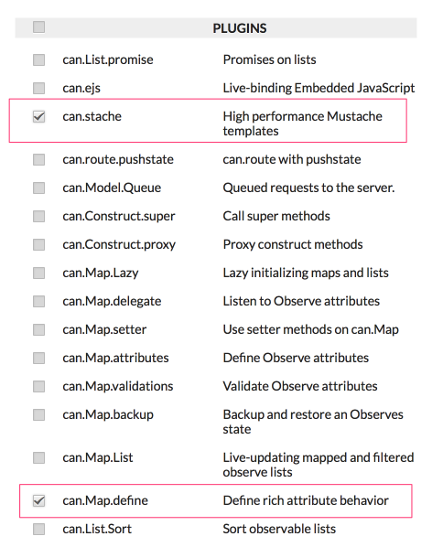
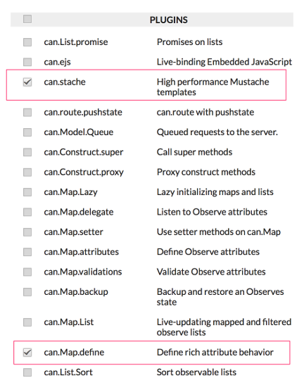

To begin, we'll make sure we have everything we need to make our application.
The first thing to do is get CanJS. The easiest way to get CanJS is to use
the the custom download page, which allows you to
download the specific parts of CanJS you need for your application.
The custom download page loads with all the elements in the core CanJS library
already selected. We want all of those in our build, so leave them checked.
CanJS relies on an external core library for some of its functionality. There
are several options available (jQuery, Dojo, YUI, etc.). The default option is
jQuery; and that's what we'll be working with here.
The right side of the page lists all of the plugins. From the list of plugins,
select the following:

At the bottom of the page, click the download button. You'll be promoted to
download a file called can.custom.js. Save that file to your local machine.
There is one additional file we need, which we won't download. This file is
special. You normally wouldn't want it to be a part of your final application,
but it can be very helpful during development. The file is can.fixture.js.
can.fixture allows you to simulate RESTful services. We'll cover how to include
can.fixture in the next chapter.
In the next step, we'll set up the application's folder structure, and move the
can.custom.js file into its appropriate folder in the app.
Folder Structure
When building a CanJS app, because our application will be built using
components, we use a component-based folder structure. This structure makes it easier to both manage the contents of the component---and port the component, should you want to use it in another application.
Off of a root folder called PlaceMyOrder, create the following subfolders:
Copy the CSS file that accompanies this guide into your site_css folder. We won't be covering any of the CSS here. Next, copy the can.custom.js file you downloaded in the previous step into the libs folder.
Finally, you'll need to download the supporting libraries. They are:
In this Chapter
To begin, we'll make sure we have everything we need to make our application. The first thing to do is get CanJS. The easiest way to get CanJS is to use the the custom download page, which allows you to download the specific parts of CanJS you need for your application.
The custom download page loads with all the elements in the core CanJS library already selected. We want all of those in our build, so leave them checked. CanJS relies on an external core library for some of its functionality. There are several options available (jQuery, Dojo, YUI, etc.). The default option is jQuery; and that's what we'll be working with here.
The right side of the page lists all of the plugins. From the list of plugins, select the following:

At the bottom of the page, click the download button. You'll be promoted to download a file called can.custom.js. Save that file to your local machine.
You can access the custom download page here: Custom downloader
There is one additional file we need, which we won't download. This file is special. You normally wouldn't want it to be a part of your final application, but it can be very helpful during development. The file is can.fixture.js.
can.fixtureallows you to simulate RESTful services. We'll cover how to includecan.fixturein the next chapter.In the next step, we'll set up the application's folder structure, and move the can.custom.js file into its appropriate folder in the app.
Folder Structure
When building a CanJS app, because our application will be built using components, we use a component-based folder structure. This structure makes it easier to both manage the contents of the component---and port the component, should you want to use it in another application.
Off of a root folder called PlaceMyOrder, create the following subfolders:
| PlaceMyOrder |--app |--components |--libs |--models |--site_cssCopy the CSS file that accompanies this guide into your site_css folder. We won't be covering any of the CSS here. Next, copy the can.custom.js file you downloaded in the previous step into the libs folder.
Finally, you'll need to download the supporting libraries. They are:
Once you've downloaded these files, rename the jQuery file to
jquery.jsand copy both files to the libs directory in your application folder.< Getting Started
Application Foundations >